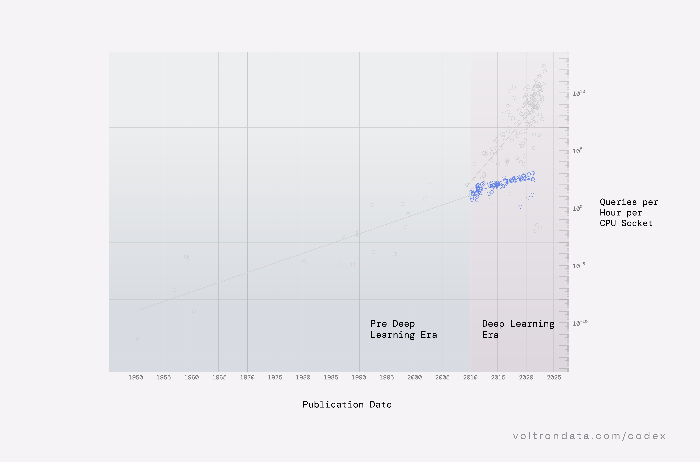
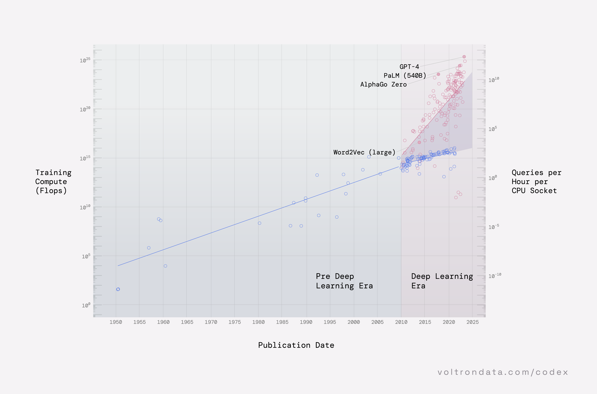
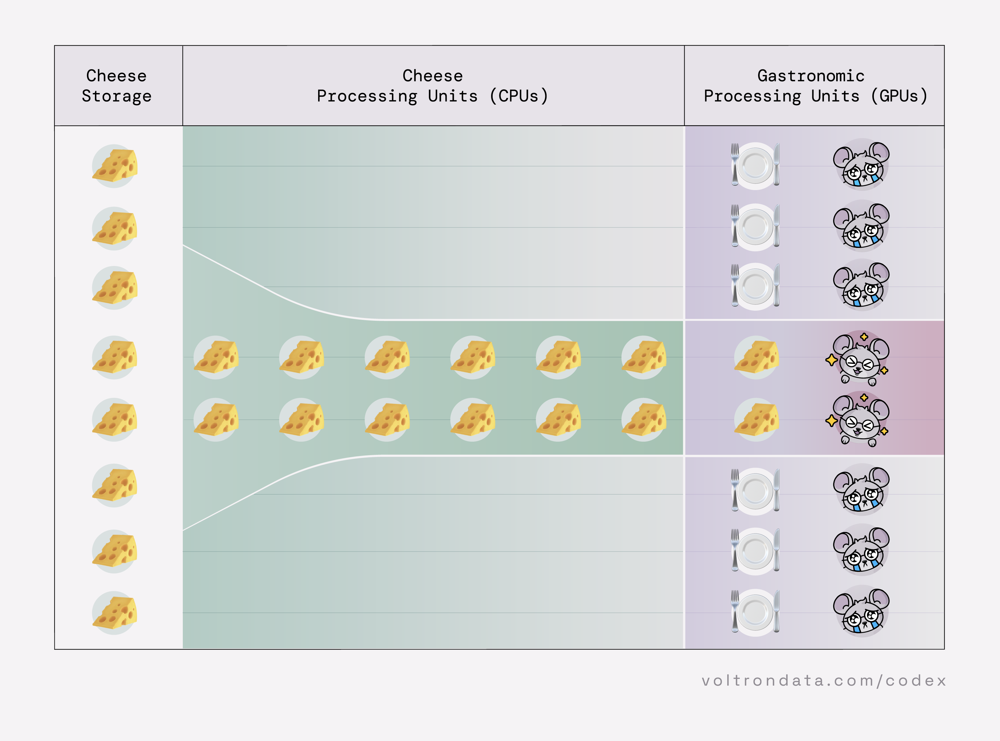

The Wall & The Machine:
Accelerated hardware
Here is a hard truth: future data systems will have to jump over The Wall, sooner or later. They will do it by moving to machines that operate on accelerated hardware. To hit the next wave of hardware innovations, composable engines that can "run anywhere" will rely on software and hardware ecosystems that are built to evolve.
What is The Wall? Keep reading below.
The Wall & The Machine:
Accelerated hardware
- Execution engine
- Execution runtime
- Hardware
- Accelerated hardware
- CPUs
- GPUs
- Optimization
- Distributed execution
- Serialization
- Arrow memory format
- Calcite
- Velox
4.0 The Wall & The Machine
The engine is the heart of any data system. The engine connects users and their queries to the data they need. In a composable data system, an engine can bridge language divides and connect to data wherever it is stored.
{kind=link}
![A diagram of the composable data system that shows the three layers of a data system with important standards layered in. The top layer is the user interface where users interact with this in order to initiate operations on data. This is typically exposed as a language frontend or API. The middle layer is the execution engine which performs operations on the data, as specified by users. The bottom layer is data storage which stores data that is available to users. Between the User Interface and Execution Engine layer is Intermediate Representation which is a standard way to represent query plans and Connectivity which is a standard for accessing databases. Between the execution engine and data storage layer is Intermediate Representation and Dataset Memory Layout which is a standard format for representing data in memory. The Execution Engine is highlighted to show that it is the focus of this chapter.](assets/images/codex/chapter4/execution-engine-hardware-acceleration.png)
The engine is also at the heart of the “build your own database” (BYODB) movement. Why? Because, over a decade ago, the biggest companies started amassing a lot of data. However, with data, more is not always more. You can certainly mine for actionable insights with bigger and bigger datasets, shipping more and more data-driven artifacts like slide decks, dashboards, and automated reports. At a certain point, dashboard fatigue sets in, and many teams felt that actionable insights were in short supply.

I've spent the last seven years kind of building dashboards. I fundamentally believe they should not exist, in most cases, for more users, and I beg you all to stop building them.
- What do we need dashboards for? Actionable insights.
- Where do those come from? It's a trick, "someone knowledgeable enough to turn data/visualizations into actionable insights."
- Is user this? Answer: usually no.
By pure serendipity or complete prescience or maybe a little bit of both, at around the same time as the BYODB movement started, two big macro-trends took root and almost everyone took notice:
- The AI arms race
- The rise of GPUs and other accelerated hardware
With these two trends, a cadre of pretty powerful new analytical methods were developed that would transform data people into data product developers. Many data teams could now see ways to do more with more data: make it interactive, responsive in realtime, and personalized. They could build search and recommendation systems, chatbots, and assistants. And slowly, the goal of many enterprise data systems started shifting away from generating insights, and toward generating revenue.
The data alone can not build products or generate revenue. It needs you. The system designer. The engineer, analyst, data scientist, and developer who must take on this new frontier, break down silos, bridge divides across languages, and tackle data sprawl.
We are in an era where most of the established assumptions, rules of thumb, and accumulated wisdom about data processing no longer hold and need to be revisited.
Gustavo Alonso, Data processing in the hardware era
So everything is awesome and data teams are running full speed ahead with all the data they need in hand and all their infra in place, yes? No. Not only have we started throwing more and more at our data systems, we are also throwing more and more data at our data people, and more and more complexity at our systems developers. We are asking everyone to do more with less to make room for AI. Something has to give, and it starts at the heart of the data system: the engine.
This constant war on happiness is what non-systems people do not understand about the systems world.
For those of you following along with The Codex, we have rolled out the red carpet for you to sit back and enjoy this viewing of The Wall, because if you are building composable now (or laying the groundwork to start tomorrow 😉), then what we are about to share will all just seem like an inevitability.
4.1The Wall
In the history of Computer Engineering, there have been several “Walls.” A wall is a seemingly insurmountable obstacle that creates a bottleneck in system performance, usually when one piece of hardware has to sit and wait on another. This particular wall though, is relatively new in the wake of AI/ML in production data systems becoming more and more mainstream.
The Wall, as we see it, is the difference between two very consequential numbers:
- The amount of compute that your AI/ML system can handle. If you are using AI/ML engines like PyTorch, TensorFlow, or XGBoost, then your training pipelines are blazing fast, and getting more performant quickly, because they were designed to run on GPUs or other accelerated processors.
- The amount of compute that your data processing system can deliver to the AI/ML system. If you are running your data processing pipelines on CPUs, this will be an order of magnitude slower than the amount of compute that your AI/ML system can handle.
In most systems, the AI/ML stack runs like how you want all your stacks to run: fast. Compute runs on advanced accelerated hardware, and bespoke engines are designed to operate on data that is too big for memory. The introduction of accelerated hardware around 2008 laid the groundwork for these new large-scale AI/ML models to take off, and since then, we have been living in the “Deep Learning Era” with ever larger models running on ever faster hardware.
{kind=link}
![Scatterplot of Training compute (in Flops, on a logarithmic scale) against Publication Date (in year ranging from 1950 to 2025 for published machine learning studies. The period 1950 to 2010 has a blue background, and is labeled Pre Deep Learning Era. The linear relationship going through the points in this section shows an increase in training compute of 10^5 flops every 30 years. The period 2010 to 2025 has a red background, and is labeled Deep Learning Era. The linear relationship shows an increase of 10^5 flops every 7.5 years. Some notable studies: Word2Vec (large), AlphaGo Zero, PaLM (540B), and GPT-4 are indidcated on the plot.](assets/images/codex/chapter4/hardware-acceleration-fuels-machine-learning.png)
The problem is that your system is only as fast as the slowest part of the system. In a modern data system, any engine that runs solely on non-accelerated hardware will be the weakest link. And here we are: throwing all of our data processing at the same CPU-based system infrastructure that has been ‘state of the art’ for years.
Before 2004, processor performance was growing by a factor of about 100 per decade; since 2004, processor performance has been growing and is forecasted to grow by a factor of only about 2 per decade.An expectation gap is apparent. In 2010, this expectation gap for single-processor performance is about a factor of 10; by 2020, it will have grown to a factor of 100.
The Future of Computing Performance: Game Over or Next Level? (National Academy of Sciences, 2011)
{kind=link}

Source: TPC-H performance data.
It is inevitable that AI will be able to train on more data than our data pipelines can process. We have become hardware-constrained by continuing to place all our data processing eggs in our CPU baskets.
It doesn't matter how fast your GPUs are if they are just going to sit there waiting for work.
Alex Scammon, G-Research
{kind=link}

This is The Wall. This is The Wall that keeps engineering leadership in your company, and anyone who cares about efficiency, up at night. It is the gap between what you are already paying for in terms of resources, hardware, and people, and what you can deliver. And The Wall will just keep growing taller.
The issue is our efficiency...really, it is the more personal pain of seeing a 5% GPU utilization number in production. I am offended by it... As a systems optimization person, I care deeply about efficiency. When you work hard at optimization for most of your life, seeing something that is grossly inefficient hurts your soul.
John Carmack, former chief technology officer of Oculus VR and executive consultant for VR @ Meta
The Wall is not hopelessly insurmountable, though. It is possible to jump over this wall, and land safely on the other side of it. But first, you need to face The Wall in front of you.
4.1.1Facing The Wall
How does accelerated hardware accelerate performance? Why are they faster than a CPU? The reason is that accelerated hardware is highly specialized: these chips are very good at performing a particular task, and that task only. While CPUs are task agnostic processors originally designed for sequential processing, GPUs are specialized processors optimized for parallel processing, which is a natural fit for AI/ML workflows. GPUs have more but smaller processing cores and a large amount of fast, on-board memory, which makes them much faster than CPUs for highly parallel tasks.
{kind=link}
![Side by side schematic drawing of a CPU and a GPU. The CPU is made up of 16 squares representing the cores, and a rectangle on top of it representing the memory. The GPU is made up with hundreds of small squares representing the cores, and a thin rectangle on top representing the memory. The memory of the CPU and the GPU are connected with arrows labeled 'copy data to GPU' and 'copy data from GPU'. Next to these two drawings, there is a pseudo code snippet that show how code is written to work on the CPU (reading data), is being passed to the GPU for computation (here a matrix inversion), is passed back to the CPU, before being written out to a file.](assets/images/codex/chapter4/traditional-gpu-accelerated-computing.png)
GPUs are like cargo ships, and CPUs are like airplanes. CPUs are like airplanes because they can get you an answer quickly. And they can go anywhere easily, meaning they can do everything. Cargo ships cannot go everywhere. They can basically only move along ocean routes and some big rivers, so they cannot go anywhere and do everything a CPU can. But, they can take a heck of a lot of things [data] with them while they do it.
Felipe Aramburú, Co-Founder & Architect @ Voltron Data
If you have an AI/ML stack as part of your data system, The Wall awaits. Your system might be a few paces away from hitting The Wall, or it might be just around the corner waiting until your next migration. Here are some of the signs teams experience when they are up against The Wall (if they sound familiar, you may have already arrived):
-
Your GPUs are sitting idle — If you have AI/ML systems running on GPUs or other accelerated hardware, and your data processing systems are running on CPUs, it is inevitable that your GPUs are sitting and waiting.
This is what some folks who anthropomorphize hardware mean when they say the GPUs are "starving." But keeping your pricey GPUs cozy and content is easier said than done.
Our wake up call came when we found our GPU utilizations near ∼25%. Most of the training time was spent in parsing CSV and copying data through
feed_dict.We were effectively towing a Ferrari with a mule.
Imagine having many hungry mouths to feed, and a fully stocked cheese cellar with plenty of cheese to go around. But with terribly inefficient Cheese Processing Units (CPUs), over half the Gastronomic Processing Units (GPUs) will end up with empty plates. Think of all the hungry mice!
Figure 04.06. Do not starve your GPUs. -
Optimizing data system performance feels like a game of whack-a-mole — The second you push forward in one performance area, another one becomes the bottleneck. While compute is ultimately the problem to solve, it is easy to spread the blame out across the system. When system performance is slow, slow compute performance can be exacerbated by less-than-stellar storage, networking, and memory bandwidth layers deep within the system.
What this means is that Facebook is going to have to keep digging to ever-lower depths in its stacks to optimize this stage — a stage that is the lynchpin for its ability to keep scaling AI training as it's done now.
-
Storage and data preprocessing consume more power than the actual GPU trainers — In data centers, power comes at a premium. If you are seeing this type of pattern, you can be sure that your CPU-based data processing system is working overtime, and is still falling short of what an accelerated AI/ML system can handle.
Two-thirds of preprocessing pipelines are spending less power on GPUs than on the data ingestion piece itself. This is constraining. We need to deploy more training capacity, which means we have to deploy more data ingestion capacity to serve those GPUs. The effect is that this limits the number of training clusters we can deploy.
-
Data people and systems people are trapped in endless implementation loops. — When data people cannot get the data they need in a reasonable amount of time, things start to go sideways in the system. This could mean that only a small fraction of AI/ML models make it into production. Even the fortunate few in production may be trained on data that is either out-of-date, incomplete, or both. Inevitably, you will find less and less people able to actually leverage the resources at their disposal.
On average, only 37% of AI/ML models are deployed in production environments. The main impediments to actually deploying include scalability (47%), performance (46%), technical (45%), and resources (42%).
![Diagram that shows the endless implementation loop that data scientists and data engineers go through when trying to get projects into production. The basis of the diagram is a circle. Inside the circle, the data scientist is represented on the left and the data engineer is represented on the left. The data scientist and data engineer are connected by a dotted line simulating the work being passed between each. Along the line are 10 smaller circles, each with the words Time + Money to represent the amount of time and money that goes into constant iteration. To the right of the main circle is a dotted line with an arrow at the end that points to an icon of a globe with the word PROD underneath. This represents workloads getting to production. Along the dotted line is text that says The fortunate 20% of projects. This means that, for all the iteration, only 20% of projects actually make it to production. Stemming from the main line are four additional dotted lines and at the end it says Rest In Peace projects. This represents the 80% of projects that do not make it into production.](assets/images/codex/chapter2/implementation-loop-language-interoperability.png)
Figure 04.07. The endless implementation loop: May the odds be ever in your favor.
{kind=link}
{kind=link}
You may already see some of these signs, or even all of them. No matter which ones you are facing, hardware is at the heart of each of these hurdles. Which means, it is time for us to talk about chips.
4.1.2 Chipping away at The Wall
In a cruel twist of fate, just as all these AI models and infrastructure were becoming more accessible to data teams, the data processing infrastructure underlying most existing enterprise data systems was under increasing pressure. While the signs were visible and voiced loudly by people on the hardware side of data systems, many data systems users remained either blissfully unaware or just held out hope that technology would eventually resolve its own hardware problem.
And so two camps of people formed: the people who worried a lot about hardware and the people who did not. The worriers’ eyes light up when they talk about the death of Moore’s law, the demise of Dennard’s scaling, and the rise of the rule of Amdahl’s law. They speak in their own vernacular about perf, flops, cores, chips, fibers, and fabric. They may even prefix every other word with “exa-“ or “hyper-“.
Meanwhile, the non-worriers are playing a game of catch-up to try to understand just how dire the situation is for their data system. If you are already a worrier, you can skip this section and move straight to The Machine. If not, read on.
In the before times, hardware designers could take on increasingly abstract and complex software challenges by banking on reliable increases in processor speed to absorb said complexity. Conversely, software programmers could write increasingly abstract and complex software with the comfort that a slow program now would be a faster program soon on the next generation of processors.

I think that it used to be fun to be a hardware architect. Anything that you invented would be amazing, and the laws of physics were actively trying to help you succeed.
James Mickens, The Slow Winter
This virtuous cycle financed investments in better, faster hardware: people bought the hardware because software ran on it, and developers wrote software to support the hardware because people were buying it.
Programmers did not have to rewrite their software—software just ran faster on the next generation of hardware. Programmers therefore designed and built new software applications that executed correctly on current hardware but were often too compute-intensive to be useful (that is, it took too long to get a useful answer in many cases), anticipating the next generation of faster hardware. The software pressure built demand for next-generation hardware.
But the era of minting better and better hardware performance through a virtuous cycle is winding down and giving way to a new cycle. And this new cycle is not about just throwing more money at the problem. The problem is that chip manufacturers “hit the physical limits of what existing materials and designs can do” (Thompson & Spanuth, 2021 ). Because of these limits, efforts to improve the performance of task agnostic processors like CPUs have become so expensive that many manufacturers have redirected more and more of their efforts to focus on innovation elsewhere.
Instead of trying to build a better CPU, hardware manufacturers have been building more powerful chips with entirely novel hardware architectures. While GPUs are the most well-known accelerated hardware, they are not the only kind that exists today:
- Application-specific processors, i.e., GPUs and DPUs (NVidia Bluefield, AMD's Pensando)
- Configurable hardware like FPGAs (e.g., Alveo by Xilinx)
- Application–specific integrated circuits (ASICs) (e.g., TPUs by Google)
{kind=link}
![Illustrative scatterplot that shows the tradeoff between Programmability and Flexibility vs. Performance (y axis) and Power Efficiency for different types of hardware (x axis). The elements on the plot are organized on a diagonal going from top-left (more programmable and more flexible but less performant and less power efficient) to bottom-right (less programmable and flexible, but more performant and power efficient). In the top-left there is General purpose processors (CPUs), followed by Application-specific processors (GPUs), Configurable hardware (FPGAs), and in the bottom-right Application-specific integrated circuits (ASICs)](assets/images/codex/chapter4/general-purpose-processors-to-application-specific-integrated-circuits.png)
Meanwhile, in the world of AI/ML, it was clear that task agnostic processors like CPUs were not up to a challenge at this scale. The inevitable conclusion was to pivot to hardware that could handle the compute needs of AI/ML models.
The catalysts include changing hardware economics prompted by the end of Moore's law and the breakdown of Dennard's scaling, a "bigger is better" race in the number of model parameters that has gripped the field of machine learning, spiraling energy costs, and the dizzying requirements of deploying machine learning to edge devices. The end of Moore's law means we are not guaranteed more compute, hardware will have to earn it. To improve efficiency, there is a shift from task agnostic hardware like CPUs to domain specialized hardware that tailor the design to make certain tasks more efficient.
And so, hardware worked harder. AI/ML algorithm development started happening alongside hardware development. This co-design and evolution pattern meant that researchers developed new algorithms that were “hardware aware,” meaning “the code [takes] advantage of hardware specific features such as multiple precision types (INT8, FP16, BF16, FP32), and target specific silicon features (mixed-precision, structured sparsity)” (Prasanna, 2022). At the same time, hardware designers started making chips that were “algorithm aware,” with dedicated features that would uniquely serve the needs of AI/ML algorithms. So in the AI/ML space, a new virtuous cycle has been booming for years: researchers have been developing new and better algorithms that exploit the hardware, and hardware designers are developing new and better chips that leverage the algorithms. This has worked so well that even the creator of Keras is able to leave hardware worries behind.
AI hardware is improving much faster than Moore's law. Hardware is the least of our worries.
François Chollet, creator of Keras and author of 'Deep Learning with Python'
Back in the land of production data systems where AI/ML and data processing engines run on different machines, hardware remains our biggest concern (for now).
In the wake of this dramatic rise in the use of AI/ML models in production, data systems have reached a tipping point. What happens next for any enterprise depends on how hard it is to switch away from execution engines that are hopelessly devoted to/irreversibly dependent on task agnostic hardware like CPUs, and how quickly they can adopt accelerated engines.
4.1.3 Why worry about The Wall?
So, if you were not a hardware worrier before, you might be worried now. If you are still questioning and wondering how these trends actually affect you, here are four key reasons why it is worth looking ahead to jumping over The Wall:
-
Costs matter:
Since 2003 (and possibly before), we have seen a striking slowdown in performance improvement in task agnostic processors like CPUs. What this practically means is that you should worry about The Wall if you worry about the economics of your data system — CPUs will continue to show diminishing returns on performance.
To put these rates into perspective, if performance per dollar improves at 48% per year, then in 10 years it improves 50x. In contrast, if it only improves at 8% per year, then in 10 years it is only 2x better.
The Decline of Computers as a General Purpose Technology (Thompson & Spanuth, 2021)
![Two panel figure with one histogram in each panel. Both histograms have percentages on the y-axis and time periods on the x-axis. On the panel labeled a, titled Microprocessor performance improvement, for the time period 1994-2003 the performance improvement is at 52%, for the time period 2003-2011 it is at 23%, for the time period 2011-2015 it is at 12%, and for the period 2015-2018 it is at 4%. On the panel labeled b, titled Microprocessor performance per dollar improvement, for the period 1994-2004 the bar is at 48%, for the period 2004-2008 the bar is at 29%, and for the time period 2008-2013 the bar is at 8%.](assets/images/codex/chapter4/general-purpose-cpu-cost-efficiency-decline.png)
Figure 04.09. The decline of the microprocessor improvement rate. Source: Adapted from Thompson & Spanuth (2021). -
Performance matters:
Chips matter because performance matters. And performance matters to everyone. You should be worried about performance if your engine runs on task agnostic processors (like CPUs) because they will slow down your system.
The biggest lesson that can be read from 70 years of AI research is that general methods that leverage computation are ultimately the most effective, and by a large margin. …the only thing that matters in the long run is the leveraging of computation.
-
Lock-in is real:
In a non-composable data system, hardware can be the ultimate vendor lock-in. When building with a cloud vendor and integrated data platform, you may not have visibility and definitely no control over the hardware you use. A decision to use any engine effectively locks you into the hardware they have decided to support (or are capable of supporting at all). It also locks you into their timeline for supporting new hardware innovations in the future. If a new hardware architecture is released that would speed up your workflows, you might wait years before it is supported by the data system.
It's code that is tied not just to hardware – which we've seen before – but to a data center, you can't even get the hardware yourself. And that hardware is now custom fabbed for the cloud providers with dark fiber that runs all around the world, just for them. So literally the application you write will never get the performance or responsiveness or the ability to be ported somewhere else.
-
Iteration matters:
Iteration is the bread and butter of data work. Having time to iterate makes for better quality models. It also makes for happier humans developing the models. For AI/ML models, the end-to-end modeling process involves a lot of trial and error. As Max Kuhn and Kjell Johnson noted, "the process of developing an effective model is both iterative and heuristic." When the data needed for preprocessing and training is on the order of terabytes in size, every trial or error can mean the difference between an abandoned prototype for hotdog/not hotdog and a real live model ready for primetime.
In order to get better ideas, create better products, publish better papers, you need to run more iterations through the loop of progress. And since you only have limited time available, that means you need to remove bottlenecks along the loop so you can move through it faster.
François Chollet, creator of Keras and author of 'Deep Learning with Python'
![Drawing comparing the time spent by a data scientist on different tasks between a CPU powered workflow and an accelerated workflow. The time spent on each task is represented by colored segments on two clock dials, one for each type of workflow. For the CPU powered workflow, the work day starts at 9 with 'configure new data prep work flow' lasting about one hour colored in blue, followed by a more than 3-hour long period, colored in green labeled 'Wait for job completion'. Another period colored in blue, lasting about an hour labeled 'Adding missing feature', followed by another more than 3-hour long period, colored in green, with the label 'Restart data prep workflow'. After that, another one hour period, colored in blue, labeled 'fix unexpected null values stored as string...', followed by another period colored in green, labeled 'Restart data prep workflow again'. At the 6 o'clock marker, a label says 'stay late'. There is another blue-colored segment, lasting about 1 hour, that is unlabeled. The period from about 7 o'clock to 9 o'clock is marked in yellow and is labeled 'Dataset downloads overnight'. For the Accelerated Workflow, the work day also starts at 9 with a blue-colored time period lasting as long as in the previous panel. After that, a very short period, marked in green, is labeled 'Start'. Blue and green colored time periods altern until about 12. The rest of the time between 12 and 5 is colored by a series of blue, purprple, and red periods, each lasting under an hour. The first purple period is labeled 'Train model'. The first red period is labeled 'validate'. One of the blue period is labeled 'Experiment with optimizations and repeat'. The last period between 5 and 6 is labeled 'Go home'. Like in the previous panel, the period between 6 and 9 is labeled 'Dataset downloads overnight'. There is also a legend at the bottom with yellow being 'dataset collection', blue is 'Data prep', green is 'analysis', purple is 'train', and red is 'inference'.](assets/images/codex/chapter4/gpu-acceleration-increases-users-speed.png)
Figure 04.10. Accelerated systems allow for more iterations during model development. Source: Adapted from NVIDIA blog post.
{kind=link}
{kind=link}
Given all the worries, will The Wall just go away if we give it more time? Unfortunately, this Wall is not going anywhere.
Even if you make all the right moves to build composable, adopt open standards, and climb the data system hierarchy of needs… you will still need to get your data system over The Wall. The only way past The Wall is over it. The only way over The Wall is with a system we call The Machine. There is no single machine that will jump The Wall, and the right machine for your data system can depend on your system and what you are trying to use it for.
4.2The Machine
To jump over The Wall, we need a holistic Machine designed to support system-level acceleration from compute to memory, networking, and storage:
- A composable engine — one that can swap in compute libraries to talk to different hardware.
- Accelerated software and hardware — compute libraries that help the engine run on accelerated hardware.
- An accelerator-native system — designed to support system-level acceleration from compute to memory, networking, and storage.
The execution engine still lies at the heart of a machine, but the whole machine keeps the heart beating: every component works together to deliver the gains of accelerated compute.
4.2.1 A composable engine
Most modern data systems are built around more than one execution engine. This is because modern engines are purpose-built and specialized. Engines provide specialized software and algorithms that data teams need to run specific workloads.
For example, it is not uncommon for the same data system to support several engines like Spark, Hive, and Presto for analytics and ETL workloads, alongside engines like PyTorch, XGBoost, and TensorFlow for AI/ML workloads. While different teams may tend to use different engines, it is also not uncommon for most teams to rely on stitching together data and workflows across several engines to run a single end-to-end data pipeline.
The heavily fragmented compute engine ecosystem at Meta, resulting from decades of organic development, was one of the earlier challenges faced in our convergence effort. Multiple engines aimed at very similar spaces were available.
Despite these differences, if you squint at them, most engines share a similar set of fundamental components (see https://howqueryengineswork.com/ for how it all works):
- A parser: takes the user’s code and turns it into a graph that represents the user’s query.
- A planner and/or optimizer: modifies the graph (for example, by re-ordering operations) to optimize it for the data or the hardware it has to operate on.
- An execution runtime: provides an environment for executing the code in the graph. A distributed runtime distributes the work across available cluster nodes.
- A compute library: contains compute primitives to perform the operations described in the graph on specific hardware.
Traditional engines for data processing often have their own proprietary implementations of each of these components (see Meta’s blog post announcing Velox). At the core of how everything works, though, is the hardware. Hardware is a huge investment, but organizations cannot just invest in new hardware. That hardware needs software to be able to make use of it. When a novel hardware architecture is introduced, the first question to ask is “how do you program it?”
An execution engine typically comes with batteries included with specific software for a specific hardware architecture. Those batteries are compute libraries that enable the engine to perform the operations described in the user’s graph on that specific hardware architecture. The hardware architecture could be proprietary, where it only works with a specific manufacturer’s chip (like Amazon Redshift that can make use of their proprietary query accelerator AQUA). Others, like x86 and ARM, are a family of hardware architectures. For example, an engine could run on x86 CPUs, which could be manufactured by either Intel and AMD, or NVIDIA GPUs which obviously are only manufactured by NVIDIA (like an engine that can make use of NVIDIA’s dataframe library libcudf).
A fundamental challenge is that different hardware types have different memory layouts and compute primitives.
Chip Huyen, A friendly introduction to machine learning compilers and optimizers
Because different hardware architectures have different memory layouts and compute primitives, if a new hardware architecture is introduced, it can take a while for software engineers to learn how to move bits and bytes around on that specific hardware and for that software to be in production data systems.
In contrast, a composable engine is designed differently. By design, it is decoupled from the other layers in the data system, including the user interface and the data storage layers. A composable engine is also decoupled from the hardware itself. This flexibility means that a composable engine can support one or more hardware architectures by supporting one or more compute libraries. What this means is that the engine supports compute libraries that allow end users to execute their analyses on different processors.
An example of a composable engine like this is Velox, which was developed by the engineering team at Meta. Velox is designed to be an engine that can swap in compute libraries to talk to different hardware. Velox currently supports CPU execution, with the intention of adding FPGA and GPU support with the Velox Wave project. Velox can be integrated with any engine, which means that all hardware architectures supported by Velox are supported by the engines that use Velox.
4.2.2 Accelerator software and hardware
It may be a truism to say that writing software for any hardware architecture is hard. But what might be less common knowledge is that it is even harder to write software for accelerated hardware. And it is even harder still to support multiple kinds of accelerated hardware within the same engine.
And this is exactly how our data processing systems got the way they are today:
I know that you are recording this talk and I know this will eventually get me into trouble, but let me say it anyway… The problem for computer scientists is that we do not understand parallelism. We have not been trained to think about systems where every moving part is working at the same time. And this actually shows a lot in the way we design systems. Electrical engineers, on the other hand, understand parallelism very well because they have been trained to think about circuits, where every moving part is acting at the same time… However, what electrical engineers do not have that computer scientists have, is abstraction. This is why we are having huge problems with GPUs, FPGAs, and all these other accelerators because the electrical engineers are providing incredibly fascinating hardware that actually has very poor abstractions. And the computer scientists do not understand this hardware because they cannot deal with this type of parallelism, and they don't have abstractions that can actually hide this parallelism for them to actually do something.
Gustavo Alonso, Data processing in the hardware era
This quote is a good reminder that even at the deepest levels of machine code and hardware, our data systems are all still made by humans, which comes with a history. That history has plagued both sides of the engineering equation:
- Hardware vendors have struggled to develop programming models that provide the right balance of performance and abstraction for software developers to use
- Software developers have struggled to materialize the performance gains that the hardware is capable of
This is where the worlds of electrical engineering and software development collide. With this new era of accelerated, parallel hardware, software developers have to think about parallelism differently.
Traditionally, parallelism has been a problem to work around. To handle the problem of parallelism, software developers have worked hard to develop advanced algorithms that (1) divide up the problem into a bunch of different chunks, (2) assign the chunks of work to a bunch of CPU-based workers, and (3) schedule all that work through a central planner or scheduler. Software developers have collectively spent a lot of time working on how to get these workers to compute faster.
With accelerated hardware, the challenge for software developers is no longer how to speed up compute, because the hardware is ready and waiting for that. The new challenge is how to partition the compute into sensible parts, and map those onto the available accelerators. Then, you have to think about how data flows between the accelerators in a way that can keep the pieces of the machine churning, and assign resources (compute, memory, bandwidth) to eliminate bottlenecks. To think differently about parallelism, you have to think more about how data flows through the machine, and less about how compute happens after it arrives.
Hardware is hard and nobody wants to dive in and master it anymore. Even today, it is difficult to hire capable and experienced software developers that can program directly for accelerators. Not many people know how to do this at all, and few can do it very well. For example, it took a very large team of developers to build cuDF (the DataFrame library built for NVIDIA GPUs) because of the difficulty of building algorithms that can leverage thousands of parallel threads executing in lock-step.
4.2.3 An accelerator-native system
To actually jump The Wall, yes you need to choose a composable engine that supports execution on accelerated hardware. But a shiny new engine and fancy new hardware is not enough. You need to accelerate all the system things: from compute to memory bandwidth, networking, and storage.
What is perhaps less apparent is that having faster tools changes how users use a tool or perform a task. Users almost always have multiple strategies available to pursue a goal — including deciding to work on something else entirely — and they will choose to use faster tools more and more frequently. Fast tools don't just allow users to accomplish tasks faster; they allow users to accomplish entirely new types of tasks, in entirely new ways.
Nelson Elhage, Made of bugs: Reflections on software performance
A holistic machine to help you get on the other side of The Wall is designed with the following three core principles:
| Principle | Component(s) | Benefit | ||||
|---|---|---|---|---|---|---|
|
Heterogeneous compute | Increases speed of processing (performing operations on data) | ||||
|
Shared memory | Operate on data where it resides instead of having to copy data between components | ||||
|
|
|
-
Work smarter — A system that works smarter needs an execution engine that can leverage the right tool for the (compute) job. A smarter engine knows how to run on more than one kind of hardware. This is known as heterogeneous compute. More and more data centers have already adopted a heterogeneous compute infrastructure, which has made more diverse hardware available in the data center.
Without acceleration, in a distributed system, all data travels into the CPU and is processed inside of the CPU within each node.
We believe a unified execution engine will pave the way for accelerators to become pervasive in data management through operator specialization.
The Composable Data Management System Manifesto (Pedreira et al., 2023)
![Schematic representation of the architecture of a CPU-based system. The drawing is organized in two layers. In the top layer, labeled Execution Engine, there are two nodes connected to an Ethernet network with a network card. Each worker is made up of a CPU, which is connected to the system memory represented by a memory stick icon with RAM written on it, and the storage represented by a hard drive icon with SSD written on it. The second layer is the data storage and it is connected to the Execution Engine layer by an arrow connecting to the Ethernet network.](assets/images/codex/chapter4/traditional-cpu-system.png)
Figure 04.11. Architecture of a CPU-based system. Source: Adapted from Life After Hadoop: Getting Data Science to Work for your Business.
To work smarter, a machine can leverage co-processors so that both processors, the task agnostic CPU and the accelerated GPU, work together.![Schematic representation of the architecture of a system where GPU acceleration has been added to a CPU-based system. The drawing is organized in two layers. In the top layer, labeled Execution Engine, there are two nodes connected to an Ethernet network with a network card. Each worker is made up of a CPU, which is connected to: a GPU, the node memory represented by a memory stick icon with RAM written on it, and the storage represented by a hard drive icon with SSD written on it. The second layer is the data storage and it is connected to the Execution Engine layer by an arrow connecting to the Ethernet network. Data from the storage has to go through the CPU to be accessible to the GPU.](assets/images/codex/chapter4/system-with-gpu-acceleration.png)
Figure 04.12. Adding GPU acceleration to a CPU-based system. Source: Adapted from Life After Hadoop: Getting Data Science to Work for your Business. -
Move less — To move data less, a system needs to be able to share memory across components (processes, libraries, devices) so that each component can operate on the same data on the same physical memory.
In a distributed data system, multiple processors/accelerators coexist and operate on the same data. But the "same data" does not end up being the actual same physical data in memory. Instead, the system clones the data from the host and copies it over and over again to every processor/accelerator before it can operate on it. Each in memory data copy adds system overhead.
Like heterogeneous compute infrastructure, hardware shared memory is becoming more commonplace. If processors can share access to a single memory space, like Apple's M chips or AMD's MI300 APUs, data does not need to be copied from one device to the next. Instead, it is available to all devices on the same die.
![Comparison of the Coherent memory architecture and the Unified memory architecture. With the Coherent memory architecture, the CPU and the GPU each have their own memory. Data needs to be copied across devices to be accessible. With the unified memory, both devices can access the data from the same memory without needing copying. To illustrate this, on the left side, the coherent memory architecture is represented by a CPU and a GPU connected with an arrow. The memory above the CPU is labeled DRAM and the memory above the GPU is labeled HBM. On the right side, the unified memory architecture is illustrated with two devices which are also connected with an arrow but they are also both connected to a common memory labeled unified memory (HBM).](assets/images/codex/chapter4/hardware-acceleration-with-unified-memory.png)
Figure 04.13. To move data less, newer devices share memory between the CPUs and GPUs. -
Move faster — To move faster, a system needs to leverage faster paths between where data resides and where it needs to be operated on. That can be done in two ways:
- High bandwidth memory (HBM) yielding TB/s of total throughput on current generation data center GPUs,
- Accelerated interconnects such as NVLink, Infiniband, and RoCE.
![Schematic representation of an architecture with system-wide acceleration. The drawing is organized in two layers. In the bottom layer, labeled Data Storage, there is an icon representing the database storage. In the top layer, labeled Execution Engine, there are two nodes. Each node comprises of a CPU which is connected to: a GPU, the system memory represented by a memory stick icon with RAM written on it, and the worker storage represented by a hard drive icon with SSD written on it. Between the two workers, there is an RDMA (Remote Direct Memory Access) network card which connects to the CPU, and the GPU. The GPU is also directly connected to the SSD in the node. The RDMA Network is also connected to the storage in the Data Storage layer.](assets/images/codex/chapter4/full-system-acceleration-for-performance.png)
Figure 04.14. System-wide acceleration. Source: Adapted from Life After Hadoop: Getting Data Science to Work for your Business.
{kind=link}
{kind=link}
{kind=link}
{kind=link}
An engine that does these three things well will help you jump The Wall. The good news is that everyone in the silicon space is building towards these three principles:
| Principle | AMD | Apple | Intel | Nvidia |
|---|---|---|---|---|
|
MI300 • CPU cores • GPU cores Xilinx (FPGA) |
M1, M2, M3 • CPU cores • GPU cores • Neural Engine Cores |
Xeon • CPU cores • Accelerator engines • XPU (via OneAPI) |
Grace Hopper • CPU cores • GPU cores • Tensor cores |
|
MI300 • CPU-GPU • shared HBM memory |
M Architecture • CPU-GPU-NE • shared memory |
Falcon Shores • CPU-GPU • shared HBM memory |
Grace Hopper • CPU-GPU • C2C Interconnect |
|
800 GB/s Infinity Fabric 3.2 TB/s HBM (MI250x) |
800 GB/s LPDDR5 | 1.22 TB/s HBM (Sapphire Rapids) | 900 GB/S NVLink 3.35 TB/s HBM (H100-SXM) |
The demand on AI systems is driving adoption of these accelerator-native hardware architectures, from on-premise deployments, GPU-first clouds like LambdaLabs, and hyperscaler clouds like Microsoft Azure. But hardware is not enough: standardized software also plays an important role here to make changes to machines safer.
4.3 Standards make machines safer
We do not know what the next Wall will be, nor what the next best processor will be. We do not know if it will be a next generation GPU, or something entirely new. As you might have noticed, we are excited about what the future of hardware holds. And we want everyone else to be able to share the excitement too.
What holds back that excitement is FUD (fear, uncertainty, and doubt). It is not just organizational change management; it is change fatigue. Once you have changed to an accelerator-native system, with a composable engine that can run on accelerated hardware, the next question you know you are going to have to answer is “What about the next big thing?” In data systems and tech, there will always be the next big thing.
Is your data system just going to keep chasing innovations? The answer is yes, but safely and (we hope) fearlessly. Remember (or imagine, for the kids in our audience) what it used to be like to upgrade your phone before the cloud: you worried about backing up all your data, your contacts, your photos, your music. Then you would have to worry about the new phone. Would it know what to do with all your stuff? Would data get lost in the shuffle? How would you know?
Composing engines and compute libraries sounds great until you have to worry about the things that can go wrong: queries are not portable, data connections are brittle, and all the glue-infra of adaptors, connectors, and protocols that talented engineers have spent years gardening might get uprooted.
This is where standards can help. Adopting standards makes it safer to make changes to your machine, because you will be able to minimize disruptions while still keeping your data system running with state-of-the-art performance on state-of-the-art hardware. While we may not know exactly what they will look like, we do know how they will work: future data systems will run anywhere — on any machine, using hardware you choose, on your terms.
4.3.1 The good news
The good news is that execution engines for analytics and ETL workloads have already decoupled two important things:
- The code the user writes that tells the computer what they want,
- The code the machine executes that tells the hardware how to do it
This declarative style programming gives the engine the freedom to figure out how to best compute the results.
How does an engine do this? The engine converts the user’s problem description (like a query) into a directed acyclic graph (DAG). The DAG represents the transformations that need to be performed on the data to produce the result. (This is very different from how programming works in other application domains, where the user program is compiled into machine code.)
Every DAG has two important components:
- Edges are data: The directed edges (or “arrows”) from one node to another represents the flow of data during the calculation.
- Nodes are compute operations: Each node represents a certain operation that must be performed on each element of the data. Examples are a filter to find certain elements, or a join to combine multiple pieces of data together. The leaf nodes are the only ones that do not receive data from a previous node: they ingest data from some source (a database, a file from storage, or events streaming in from the network).
{kind=link}
![Same drawing as figure 02.11 showing how a user query is converted into a Substrait plan, but we are zooming on the Substrait plan to show a tree representation of the query plan. The operations, represented as nodes, are written in Substrait which are linked with Arrow data. The tree has two branches. One starts with a read operation, followed by a filter, and an aggregate. The second branch starts with a read, followed by a project. The two branches merge with a join operation, leading to a root.](assets/images/codex/chapter4/multiple-applications-with-substrait.png)
This graph representation of the user’s program (the DAG) gives the engine a lot of flexibility. For example, an optimizer can transform the DAG into a simplified, but equivalent, set of instructions that produces the same result.
4.3.2 The bad news
For most data processing engines, the DAG is engine-specific. Which means:
- Edges represent different data formats: The data that flows through the DAG is governed by the data layout in memory. But each engine has its own data layout. Spark is built on Java, so lots of data is stored in memory as Java objects. Software that is not built on Java does not know how to operate on that data. Many engines even use different programming languages. Suppose a user wants to perform a small piece of pandas code (which is Python), as an operation in a Spark program? The data will first need to be extracted from Spark’s memory, converted to Python data that pandas understands, and after the program is finished it will need to be converted back.
- Nodes represent non-portable operations: The DAG that is produced is represented by some data structure. Engines have their own implementations of this, so a Spark QueryPlan (coded in Scala) only works together with Spark’s planner, optimizer, and execution engine. Even if that was not the problem, what exactly are the nodes in the DAG supposed to do? Their behavior is very specific to the data engine in use. Small discrepancies in the behavior can lead to very different end results.
Without standards for both the edges and nodes in the DAG, an accelerated engine relies on a lot of glue code to run. All that glue code makes for a very messy DAG, not to mention it also starts to chip away at the gains of accelerated compute in the first place.
- For the data, glue code converts any data structures from system memory to the layout expected by every other component.
- For the compute plan, glue code works as an interpreter: translating custom operations between each piece of software that wants to participate in the workload. An accelerator would need to consider the idiosyncrasies of each engine in the implementation of its operations.
4.3.3 The solution is standards
Two standards introduced in earlier chapters in The Codex unite in this final act to make it safer for systems developers to adopt new engines and hardware: Arrow and Substrait. Without standards like Arrow and Substrait, a new hardware platform would be confronted with the chicken and egg problem:
- Nobody buys it because no software runs on it
- Nobody adds software support for it because nobody is buying it
In the DAG of our ideal composable engine, they each fill a role:
- Edges are Arrow data: The directed edges (or “arrows”) from one node to another represents the flow of Arrow data during the calculation.
- Nodes are Substrait compute operations: Each node represents a certain Substrait operation that must be performed on Arrow data.
Together, Arrow and Substrait provide the necessary standards that composable systems can be built upon, by providing a clear interface that programmers on both sides of the chicken and the egg problem can depend on. As long as a node is able to operate on Arrow data and produce results in Arrow format, they can be used in our DAG.
Substrait provides a specification for the DAG itself, and the behavior of the nodes. That means if a framework is able to work with Substrait plans, it can interoperate with other software that leverage Substrait compatible libraries. Several projects currently support Substrait plans including Velox and DuckDB.
Now that composable engines can mix and match hardware components and compute libraries, chip designers can introduce new hardware that can be integrated into existing software just by providing support for Arrow and Substrait. Composable engines make it possible to add a new hardware backend to support specialized hardware that has not even been developed yet. In this way, chip designers can tap into a large software ecosystem that already exists, and systems developers can extend any workloads to take advantage of hardware innovations without switching engines.
So, beginning to put all of this together, we can envision a system that leverages Arrow and Substrait and is able to run on any chip. As chips get better, so does your workflow.
4.4 The MICE in the machine
There are a lot of words on this page. In this final section, we promise less sentences and more tables with mice. In the Codex, we have used MICE to climb the data systems hierarchy of needs: from modular, interoperable, customizable, and ultimately to extensible.
| Need | Description | Benefit |
|---|---|---|
| Modular | Engines can be added, removed, or replaced without affecting the rest of the system. | Changing the engine (migrating to or away from it) has no or minimal impact on other components, and choosing an engine means you can only change the engine and not the UI or storage layers. |
| Interoperable | Engines can communicate with other components to exchange and make use of information, using well-defined interfaces. | Connecting the engine to other system components does not require additional development work. |
| Customizable | Engines can be combined with other components in unique patterns to satisfy specific needs. | Using the engine helps you compose and customize your data system through exposing standard interfaces for both hardware and software components. |
| Extensible | Engines can be easily modified to add new features or functionality. | Extending the engine makes it easier to build a tailored system that meets your needs. |
4.4.1 Modular
| Benefit | Engine feature |
|---|---|
| Minimize changes required in other layers | → Supports choice of user interface (UI). → Separates compute operations from storage, so you do not have to move your data to use the engine. |
| Minimize switching costs | → Fits into existing team workflows (i.e., if a team primarily uses Python, the engine should have a Python-based UI). → Same engine can be used locally, on premises, behind an air gap, and in the cloud. |
| Works with hardware you are already using | → Can work with CPU-based hardware infrastructure to ease transition to accelerated hardware. |
4.4.2 Interoperable
- Query plans: Accept a standard query plan from a compatible UI
- Data: Use a standard in-memory data format
| Benefit | Engine feature |
|---|---|
| Accept standard query plans that are portable across standardized engines | → Accepting Substrait plans means that the engine can interoperate with any Substrait producer. This can be a user interface, but also for example a query optimizer. |
| All components can operate on each other’s data directly | → Operates directly on Arrow data, without making copies or performing conversions. → Returns Arrow-formatted data so results can again interoperate with downstream components that support Arrow data. |
4.4.3 Customizable
| Benefit | Engine feature |
|---|---|
| Supports customizing how the engine works | → Supports choices for mixing and matching modular, interoperable engine components (parser, planner, optimizer). |
| Supports accelerated hardware | → Supports accelerated hardware with compute libraries cushioned by an accelerator-native system (memory bandwidth, networking, and storage). |
| Supports choice of compute libraries (and hardware, by extension) | → Provide configuration options for system developers or even end users to change the compute library to execute on specific hardware (i.e., CPUs, GPUs, etc.). |
4.4.4 Extensible
| Benefit | Engine feature |
|---|---|
| Extend compute library to include new operations (like geospatial functions) | → Ability to develop your own compute kernel library (maybe a filter operation is available, but you have a custom filter operation that your team needs to use). |
| Hardware vendors can add support for their platform | → Clear procedure for adding engine support for a new hardware backend. |
Watch this space. The wild west of hardware is a lot more fun when you build composable.
4.5 Codex complete… (for now)
You have reached the end of The Composable Codex. We have delighted in sharing our passion for composable data systems and the technology that makes it possible with you over the course of five chapters. You can access the full Composable Codex here.
If you are interested in designing and building composable data systems, we encourage you to join the communities building composable standards and open source projects like Arrow, Arrow Database Connectivity, Substrait, Ibis, or Velox. You can also explore the Voltron Data Careers page to see if there are opportunities for you to join our composable mission.
4.5.1 How can I stay up to date with Voltron Data?
You can keep up with all things Voltron Data by following us on LinkedIn and X (formerly Twitter). If you want to receive alerts for future content like The Composable Codex, sign up for our email list (we won’t send you product promotions).
4.5.2 Who wrote The Composable Codex?
The Codex is written by engineers, data scientists, and leaders at Voltron Data. You can find out more about what we do at Voltron Data here: https://voltrondata.com/product
4.5.3 How can I cite The Codex?
For attribution, please cite this work as:
Voltron Data. 2023. The Composable Codex. https://voltrondata.com/codex
@ONLINE{composablecodex,
author = {Voltron Data},
title = {"The Composable Codex"},
year = {2023},
url = {https://voltrondata.com/codex},
langid = {en}
}